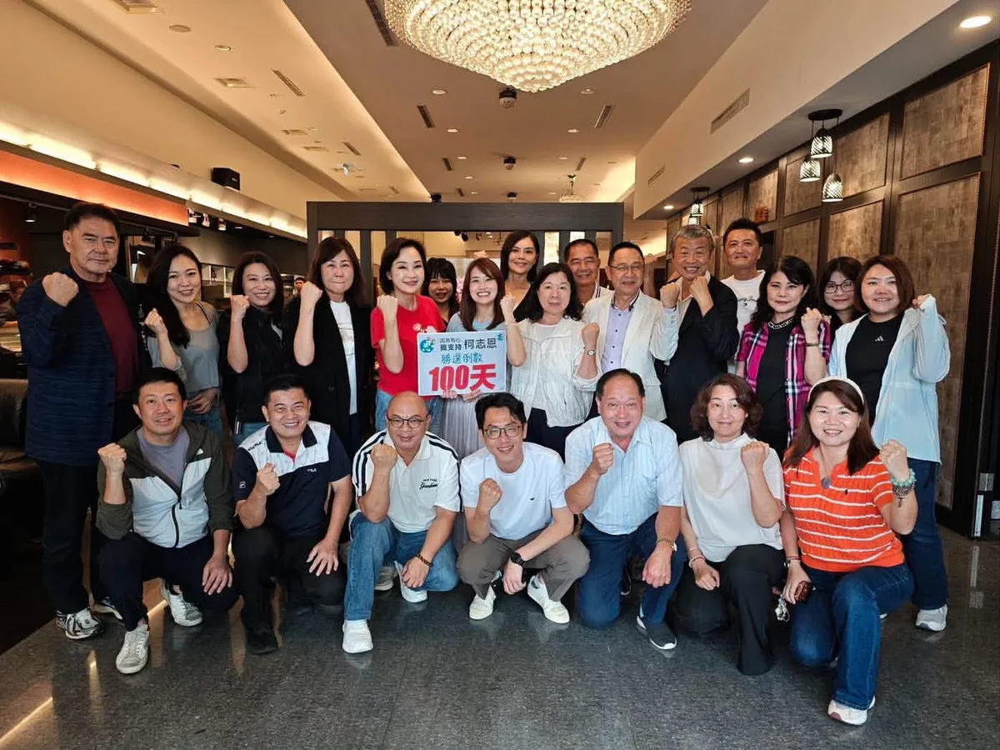
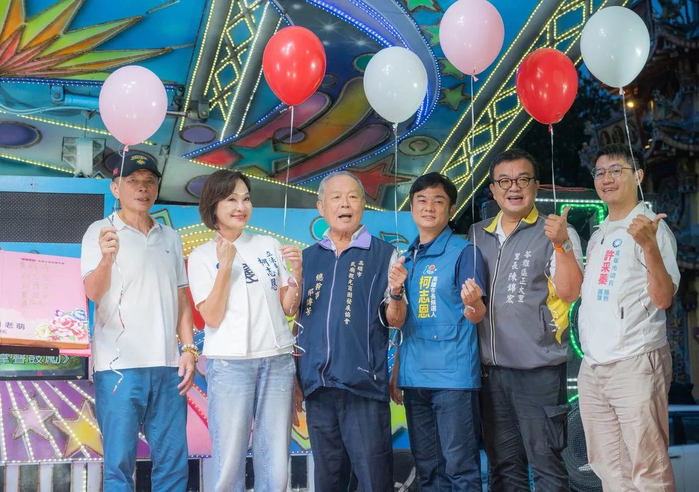
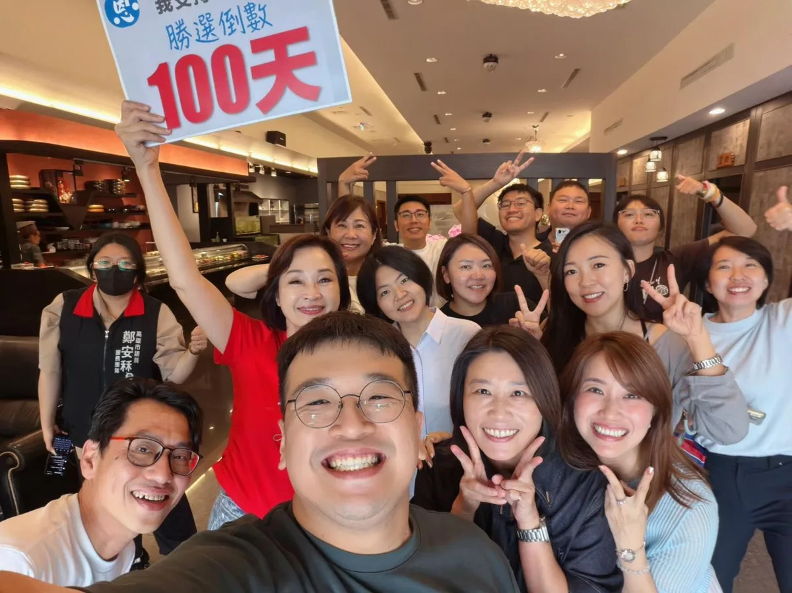
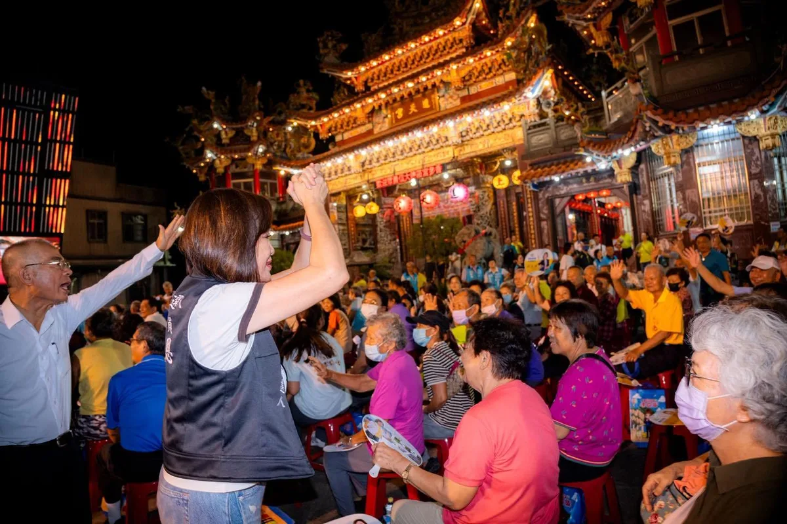

@prof.kochihen:近日高雄豪雨不斷，趁著行程空檔，特別趕赴仁武區赤山里，關心地方積淹水情況，也與謝青原里長一同前往仁雄橋，了解曹公新圳排水情形。 謝里長表示，昨晚起里內陸續出現排水不及、積淹水情況，所幸即時反映處理，加上今早雨勢稍緩，積水已陸續排除。 另外，澄清湖原博館基地每逢大雨就有黃泥水流出，造成居民困擾，我也會向原民會反映，協助地方尋求改善。 雨勢仍可能持續，請大家做好防雨、防淹水準備，非必要盡量減少外出，平安最重要。
Accounts
| 平台 | 帳號 | 已收錄貼文 | 最後更新 |
|---|---|---|---|
| 官網 | https://www.k100.tw/ | 0 | — |
| https://www.facebook.com/KoChihEn/ | 83 | 2026-08-21 18:00 | |
| https://www.instagram.com/prof.kochihen/ | 99 | 2026-08-21 18:00 | |
| Threads | https://www.threads.com/@prof.kochihen | 57 | 2026-08-22 13:12 |
| YouTube | https://www.youtube.com/channel/UCmDcMkSjhyj2R91z0FlGjAA | 51 | 2026-08-20 20:04 |
| TikTok | https://www.tiktok.com/@kochihen | 0 | — |
| LINE 官方帳號 | https://reurl.cc/MNQXRL | 0 | — |
| LINE 社群 | https://reurl.cc/lep726 | 0 | — |
Timeline
顯示 290 / 290 則
@prof.kochihen:近日高雄豪雨不斷，趁著行程空檔，特別趕赴仁武區赤山里，關心地方積淹水情況，也與謝青原里長一同前往仁雄橋，了解曹公新圳排水情形。 謝里長表示，昨晚起里內陸續出現排水不及、積淹水情況，所幸即時反映處理，加上今早雨勢稍緩，積水已陸續排除。 另外，澄清湖原博館基地每逢大雨就有黃泥水流出，造成居民困擾，我也會向原民會反映，協助地方尋求改善。 雨勢仍可能持續，請大家做好防雨、防淹水準備，非必要盡量減少外出，平安最重要。


做農民的靠山，做高雄農產的推銷員！ 繼日前拜訪田寮農會後，我持續深入基層，今天來到燕巢農會，傾聽農民最真實的聲音，也更深刻感受到，農業發展不能只靠農民單打獨鬥，而是需要政府成為最堅強的後盾。 大家都說，農人的宿命是「看天吃飯」。有時大旱、有時豪雨成災，農田耕作充滿不可預期的變數，但即便如此，大家依然一棵一棵扶正、一畝一畝用心施肥灌溉；除了期待豐收，我想，更是因為對這片土地有著深厚的感情，正因為這份堅持，更讓人覺得這麼好的農產品，應該被更多人看見、被更多人喜歡。 這段時間走訪農會與地方座談，我也聽見許多農民朋友共同關心的問題，包括農會建物老化修繕、猴群滋擾造成農損、偏遠地區遭濫倒廢棄物、灌溉水源不足、自來水濁水問題，以及保安林限制影響地方發展等。這些看似零碎的問題，其實都直接關係到農民的生活品質與農業競爭力。除了持續向相關單位反映、爭取改善，未來我也將從三大方向全力協助燕巢農業發展： 1、打造在地品牌，讓「燕巢」成為品質保證的代名詞，提升農產品辨識度與附加價值，讓好產品不再只能賣原料價格。 2、健全冷鏈物流，爭取建置冷鏈包裝與運輸系統，依照不同農產品需求做好溫控，讓燕巢農產維持最佳品質，拓展國內外市場。 3、補足農業人力，邁向智慧農業，推動農會統一聘僱移工，依照產季做季節性的人力調度，讓小農也能得到實質幫助；同時鼓勵青年返鄉，並同步輔導農戶引進自動化設備。燕巢缺的不只是工人，更要用自動化機具補足對勞動力的依賴，未來讓人力僅作為「輔佐」，讓燕巢這個地方更加智慧化。 此外，我也會持續為提高老農津貼努力，主張調升至15,000元，並建立定期檢討機制，讓辛苦一輩子的農民獲得更好的保障；同時強化長輩照顧，提高敬老卡點數、擴大使用範圍，讓福利照顧也能帶動農會與在地產業。 好的 #農業 政策，不只是 #農產品 種得好、賣得出去，更重要的是 #農民 能不能真正賺得到錢、過得更安心。 未來，我會繼續做大家的靠山，也做燕巢最認真的推銷員，讓更多人看見燕巢三寶、看見高雄農業的價值與驕傲，一起把燕巢最好的農產，風風光光推向全世界！

@prof.kochihen:選戰倒數一百天，議員全壘打、這柯一定贏！
@prof.kochihen:選戰倒數100天，我們一起把夢想實現！ 小編翻出4年前我在謝票時的影片。畫面裡的哽咽，是感動，更是我始終放在心上的承諾。 那一天，我對高雄人說：「柯志恩會用下半輩子，回報高雄。」 4年來，我沒有一刻忘記這句話。 倒數100天，讓我們再次整隊出發，一起把對高雄的愛和夢想，徹底實現！

願每一份真心，都遇見對的人；願每一段緣分，都走向幸福！ 今天來到高雄武廟參加「月老來了：2026高雄武廟緣投香袋」七夕祈福活動，現場洋溢著滿滿的幸福氛圍，也感受到大家對美好姻緣與幸福生活的期待。 特別感謝武廟觀光商圈潘世貞理事長與大家分享「緣投香袋」；香袋裡的紙籤還特別用顏色區分，方便月老公精準牽線，絕不會錯點鴛鴦，相當貼心！ 不過這份祝福對我來說應該是「幸福加持版」；至於身旁還在努力尋找人生隊友的夥伴，想必是格外珍惜。 祝福大家七夕快樂，有情人感情甜甜蜜蜜，單身朋友也都能早日遇見那位對的人！
祝大家七夕情人節快樂！ 七夕想求好姻緣，高雄也有不少人氣月老廟： ❤️ 鹽埕區｜霞海城隍廟 ❤️ 前金區｜成功佛堂＆老佛爺月老廟 ❤️ 苓雅區｜高雄關帝廟 月老幫忙牽紅線，幸福還是要靠彼此用心經營。 願每一段緣分都能相知相惜、幸福相隨。 祝福有情人終成眷屬；眷屬終是有情人！ #七夕情人節快樂


惡地能種出最甜的果實，給柯志恩四年，讓我為田寮拼出最美好的未來！ 今天廟口那卡西列車來到 #田寮，活動還沒開始，崇德進天宮的廟埕已經坐得滿滿都是人，許多鄉親帶著親友，還有阿公阿嬤帶著孫子過來看熱鬧，讓我心裡滿是歡喜！ 在地有句臺語俗諺說：「土黏水鹹、蹛佇這的人骨力擱勤儉」，形容田寮人的勤奮努力、不畏艱辛。特別是早年交通不便，田寮惡地地形缺乏耕地，我們的先民運用智慧自溪流引水、修築農塘積蓄水資源來灌溉作物，也養殖雞豬羊等牲畜撐起家計。 田寮雖然是惡地地形，卻孕育了最頂級的農產，這片土地種出來的芭樂與棗子無比鮮甜，獨特的石灰岩地質與氣候，也讓大崗山產出的龍眼蜜質地濃郁、香氣深厚。還有我們在地的放山土雞，因為常在惡地地形活動，肉質扎實有彈性、口感鮮甜，搭配獨特烹調手法，更是許多老饕的最愛。 回想這半年來，我幾乎每個月都來到田寮，從西德里義民爺的平安宴，還有六月豪雨時，我與李亞築議員踩著淤泥，走進西德里及日月禪寺勘災。當時我也立刻聯繫中央，請中央給予災民所有必要協助。 我也跟鄉親報告，今年六月豪雨，二仁溪暴漲溢流崇德橋，一度導致國三田寮交流道無法通行，讓「月世界變水世界」。 針對田寮低窪逢豪大雨就淹水的問題，我主張在上游加強植生、增設在地 #滯洪空間，另外，由於 #二仁溪 是跨越台南與高雄的中央管轄河川，未來如果我有機會帶領高雄，我也會與台南攜手合作，共同把二仁溪整頓好。 田寮總人口僅有6千多人，其中65歲以上人口比例高達34.40%，扶老比全市最高，嚴重的高齡化與年輕人口外移，導致了明顯的「老老照顧」與醫療資源缺乏等困境，未來我一定會照顧好長輩的健康。 另外，我們的年輕人離鄉，也是因為環境還不夠好，我們需要透過各種地方創生活動以及觀光資源，把年輕人帶回來。例如近年高雄市府主推的月世界熱氣球，活動短短三天吸引四萬人潮，就是由亞築大力爭取，未來亞築和我會繼續努力，讓田寮的年輕人願意回家。 田寮人給了民進黨2、30年的執政機會，但田寮沒有因此更好？過去30年來，國民黨在田寮得票都很低，但我們不會因為這些就氣餒，柯志恩一定努力做得更好。 柯志恩是南部的女兒，沒有派系把持，更沒有金山銀山，人民就是我唯一的靠山。今天我在媽祖面前許下承諾：人在講、天在聽，我一定會認真聽取鄉親心聲、用心為鄉親做事。不用說贏多少票，哪怕只贏一票，對我來說都是重大的託付。 請田寮鄉親給我一個機會，讓高雄有一個願意為田寮做事，把鄉親需要放在心上的市長，也讓我們的孩子未來都能驕傲地說：「我來自田寮！」

@prof.kochihen:願吳里長一路好走，安息自在。 我們曾經一起打過守護鄉里的戰役。 今天懷著無比沉痛的心情，再次來到大樹和山里，這次是向吳順治里長拈香悼念。 去年，「大樹和山光電案」造成51公頃山林被剷平，第一次走進現場時，眼前山頭光禿、黃土泥濘的景象，令人震撼難以置信，透過空拍鏡頭及新聞報導，也讓全國人民驚覺，原來非法光電業者對於我們國土環境的破壞如此巨大。 那段日子，我擔心豪雨造成的土石流，會沖進100公尺外的和山里，造成居民生命財產損失，我多次來到和山里，每次都是吳里長陪著我，協助我揭露弊端，我在中央發聲，他則為守護家園與里民安全四處奔走。 也正是在那段並肩努力的過程中，我看見一位基層里長對家鄉最深的牽掛。面對熟悉的土地受到傷害，他選擇站出來，替土地說話、替鄉親發聲。 守護環境，是在家園面臨傷害時，有人願意選擇站在最前面。 如今故人離去，但對土地的守護不會因此結束。吳里長曾經堅持的、在乎的，我們會繼續放在心上；該守護的山林、該為鄉親發出的聲音，未來也會在我們手上，一代一代接續下去。 謝謝吳里長曾與我們並肩努力。這份對家鄉的牽掛不會離開，而會成為留下來的人繼續守護和山里與大樹的力量。

Teacher Ko has found the originator of "#ShunQiLai"! Let's all "#KaohsiungShunQiLai" together~~~

倒數99天！商圈復興與產業轉型的三大願景 看著一些曾經繁華的街道逐漸冷清，許多高雄鄉親都感到可惜。高雄有很大的發展潛力，城市的繁榮也不該只集中在少數地區。要讓商圈重新熱鬧、產業持續升級，就要從空間活化、城市再生與產業轉型三個方向一起推動。 一、舊商圈大復活，讓特色商店進駐點亮老街區 成立「復興高雄經濟媒合平台」，全面盤點舊市區的閒置店面與市場，透過租稅減免與租金補貼，媒合創業者及關鍵商家以合理租金進駐，讓年輕人的創意走進老商圈。 減少閒置空間只是第一步，更重要的是把人潮與商機帶回來，讓一間間閒置店面重新開門，讓一條條街道重新熱鬧起來。 二、車站舊城華麗再生，讓綠廊串聯城市商業機能 高雄車站周邊即將迎來新的發展契機，將引進A級商辦與國際飯店，搭配青年創業獎勵金，打造老店傳承、新創孵化的優質環境。 同時推動舊城再生計畫，以高雄車站為重要樞紐，善用既有的台鐵地下化綠園道，串聯鼓山、鹽埕、三民到鳳山的商業動能。讓都市綠廊不只是休憩空間，更成為串聯生活、商業與觀光的重要廊道，讓人潮沿著綠廊走進城市，也讓繁榮走進每一個巷弄。 三、服務業億元轉型，成為中小企業最強後盾 高雄的服務業也要升級。推動「服務業億元轉型計畫」，投入資源陪伴中小企業進行數位轉型，成立「數位轉型輔導小組」，結合產官學力量，協助企業導入智慧化系統。 加速引進AI、雲端等科技，發展智慧醫療、遠距教育、智慧物流等新型態服務業，創造更多高薪工作機會；鼓勵在地業者異業結盟，打造一站式電商平台，把高雄品牌推向國際。 同時協助企業引進、培訓數位人才，鼓勵學校師生團隊投入創業，成為企業轉型的重要夥伴，從資金、人才到法規提供完整支持，讓民間的創意成為高雄產業升級的最大動能。 高雄的繁榮，要從每一個商圈開始，也要從每一個產業升級。 讓舊商圈重新熱鬧、讓舊城區重新發光、讓中小企業找到新的成長機會，才能讓人潮回來、商機回來、年輕人留下來。

#緊急 #公告 #廟口 高雄這幾天雨勢強烈，氣象署也發布 #豪雨 特報，為了確保鄉親安全無虞，原定今晚在三民區三鳳宮舉行的「廟口音樂會」活動確定取消，將再另外擇期舉行。也呼籲所有鄉親這幾天非必要請盡量減少外出，並做好防汛措施。 造成大家不便，敬請見諒。願高雄一切平安。 #高雄 #平安 #安全為上

做農民的靠山，做高雄農產的推銷員！ 繼日前拜訪田寮農會後，我持續深入基層，今天來到燕巢農會，傾聽農民最真實的聲音，也更深刻感受到，農業發展不能只靠農民單打獨鬥，而是需要政府成為最堅強的後盾。 大家都說，農人的宿命是「看天吃飯」。有時大旱、有時豪雨成災，農田耕作充滿不可預期的變數，但即便如此，大家依然一棵一棵扶正、一畝一畝用心施肥灌溉；除了期待豐收，我想，更是因為對這片土地有著深厚的感情，正因為這份堅持，更讓人覺得這麼好的農產品，應該被更多人看見、被更多人喜歡。 這段時間走訪農會與地方座談，我也聽見許多農民朋友共同關心的問題，包括農會建物老化修繕、猴群滋擾造成農損、偏遠地區遭濫倒廢棄物、灌溉水源不足、自來水濁水問題，以及保安林限制影響地方發展等。這些看似零碎的問題，其實都直接關係到農民的生活品質與農業競爭力。除了持續向相關單位反映、爭取改善，未來我也將從三大方向全力協助燕巢農業發展： 1、打造在地品牌，讓「燕巢」成為品質保證的代名詞，提升農產品辨識度與附加價值，讓好產品不再只能賣原料價格。 2、健全冷鏈物流，爭取建置冷鏈包裝與運輸系統，依照不同農產品需求做好溫控，讓燕巢農產維持最佳品質，拓展國內外市場。 3、補足農業人力，邁向智慧農業，推動農會統一聘僱移工，依照產季做季節性的人力調度，讓小農也能得到實質幫助；同時鼓勵青年返鄉，並同步輔導農戶引進自動化設備。燕巢缺的不只是工人，更要用自動化機具補足對勞動力的依賴，未來讓人力僅作為「輔佐」，讓燕巢這個地方更加智慧化。 此外，我也會持續為提高老農津貼努力，主張調升至15,000元，並建立定期檢討機制，讓辛苦一輩子的農民獲得更好的保障；同時強化長輩照顧，提高敬老卡點數、擴大使用範圍，讓福利照顧也能帶動農會與在地產業。 好的 #農業 政策，不只是 #農產品 種得好、賣得出去，更重要的是 #農民 能不能真正賺得到錢、過得更安心。 未來，我會繼續做大家的靠山，也做燕巢最認真的推銷員，讓更多人看見燕巢三寶、看見高雄農業的價值與驕傲，一起把燕巢最好的農產，風風光光推向全世界！

選戰倒數一百天，議員全壘打、這柯一定贏！ #高雄 #倒數 #100days
選戰倒數100天，我們一起把夢想實現！
Teacher Ko returns to his familiar hometown #Pingtung, instantly turning back into a kid?
祝大家七夕情人節快樂！ 七夕想求好姻緣，高雄也有不少人氣月老廟： ❤️ 鹽埕區｜霞海城隍廟 ❤️ 前金區｜成功佛堂＆老佛爺月老廟 ❤️ 苓雅區｜高雄關帝廟 月老幫忙牽紅線，幸福還是要靠彼此用心經營。 願每一段緣分都能相知相惜、幸福相隨。 祝福有情人終成眷屬；眷屬終是有情人！ #七夕情人節快樂

Ke Chih-en: I don't care what China thinks, I only care what the people of Kaohsiung think! #KeCh...

我們曾經一起打過一場守護鄉里的戰役。 今天懷著無比沉痛的心情，再次來到大樹和山里，這次是向吳順治里長拈香悼念。 去年，大樹和山光電案造成51公頃山林被剷平，第一次走進現場時，眼前山頭光禿、黃土泥濘的景象，令人震撼難以置信，透過空拍鏡頭及新聞報導，也讓全國人民驚覺，原來非法光電業者對於我們國土環境的破壞如此巨大。 那段日子，我擔心豪雨造成的土石流，會沖進100公尺外的和山里，造成居民生命財產損失，我多次來到和山里，每次都是吳里長陪著我，協助我揭露弊端，我在中央發聲，他則為守護家園與里民安全四處奔走。 也正是在那段並肩努力的過程中，我看見一位基層里長對家鄉最深的牽掛。面對熟悉的土地受到傷害，他選擇站出來，替土地說話、替鄉親發聲。 守護環境從來不只是一句口號，而是在家園面臨傷害時，有人願意選擇站在最前面。 如今故人離去，但對土地的守護不會因此結束。吳里長曾經堅持的、在乎的，我們會繼續放在心上；該守護的山林、該為鄉親發出的聲音，未來也會在我們手上，一代一代接續下去。 謝謝吳里長曾與我們並肩努力。這份對家鄉的牽掛不會離開，而會成為留下來的人繼續守護和山里與大樹的力量。 願吳里長一路好走，安息自在。 #守護 #高雄 #大樹
每年來到洗染工會，最讓我感受到的，就是大家始終如一的熱情與人情味！ 今年再次來到 #高雄市洗染業職業工會 聯歡餐會，一進場就有許多會員朋友熱情上前打招呼、合照、加油。和大家一年一度相聚，看見一張張熟悉的笑臉，真的讓我很窩心。 感謝蔣孟程理事長、全體理監事以及所有會員朋友的用心，讓大家每年都能有這樣一個機會齊聚一堂、吃飯聊天。 勞工朋友一路辛苦打拚，我也會持續為大家爭取更好的保障。從增加五天假期，到最近領銜提案將勞退提撥率從6%提高到9%，希望一步一步，讓勞工的權益更有保障。 謝謝大家每一年給我的熱情與鼓勵，這份支持，我一直都記在心裡！ 祝福所有勞工朋友身體健康、闔家平安！

倒數99天！商圈復興與產業轉型的三大願景 看著一些曾經繁華的街道逐漸冷清，許多高雄鄉親都感到可惜。高雄有很大的發展潛力，城市的繁榮也不該只集中在少數地區。要讓商圈重新熱鬧、產業持續升級，就要從空間活化、城市再生與產業轉型三個方向一起推動。 一、舊商圈大復活，讓特色商店進駐點亮老街區 成立「復興高雄經濟媒合平台」，全面盤點舊市區的閒置店面與市場，透過租稅減免與租金補貼，媒合創業者及關鍵商家以合理租金進駐，讓年輕人的創意走進老商圈。 減少閒置空間只是第一步，更重要的是把人潮與商機帶回來，讓一間間閒置店面重新開門，讓一條條街道重新熱鬧起來。 二、車站舊城華麗再生，讓綠廊串聯城市商業機能 高雄車站周邊即將迎來新的發展契機，將引進A級商辦與國際飯店，搭配青年創業獎勵金，打造老店傳承、新創孵化的優質環境。 同時推動舊城再生計畫，以高雄車站為重要樞紐，善用既有的台鐵地下化綠園道，串聯鼓山、鹽埕、三民到鳳山的商業動能。讓都市綠廊不只是休憩空間，更成為串聯生活、商業與觀光的重要廊道，讓人潮沿著綠廊走進城市，也讓繁榮走進每一個巷弄。 三、服務業億元轉型，成為中小企業最強後盾 高雄的服務業也要升級。推動「服務業億元轉型計畫」，投入資源陪伴中小企業進行數位轉型，成立「數位轉型輔導小組」，結合產官學力量，協助企業導入智慧化系統。 加速引進AI、雲端等科技，發展智慧醫療、遠距教育、智慧物流等新型態服務業，創造更多高薪工作機會；鼓勵在地業者異業結盟，打造一站式電商平台，把高雄品牌推向國際。 同時協助企業引進、培訓數位人才，鼓勵學校師生團隊投入創業，成為企業轉型的重要夥伴，從資金、人才到法規提供完整支持，讓民間的創意成為高雄產業升級的最大動能。 高雄的繁榮，要從每一個商圈開始，也要從每一個產業升級。 讓舊商圈重新熱鬧、讓舊城區重新發光、讓中小企業找到新的成長機會，才能讓人潮回來、商機回來、年輕人留下來。

今日院會表決通過對行政院長卓榮泰的譴責案逕付二讀。 一紙決議或許無法讓民進黨幡然悔悟，但在憲政歷史的紀錄上，絕對要讓「賴卓體制」——這個台灣民主史上最惡劣的權力怪獸，留下最難堪的恥印！ 「民主」的核心在於溝通、協調與尊重多數。然而卓院長卻一再以極端與霸道的姿態凌駕國會決議，對立法院三讀通過的法案採取「不副署、不公布、不執行」的惡霸手段，創下行政權無限擴張的憲政惡例。 缺乏監督的權力是民主的毒藥，傲慢無節制的行政權更是憲政的災難。為維護國會尊嚴、捍衛國家憲政體制，院會今日以嚴厲譴責正告行政團隊：切勿繼續踐踏憲法，否則終將遭到民意的唾棄！ 今日新北市長候選人 李四川Hammer Lee 特別拜會立院，再次看到屏東鄉親「#川伯」，非常開心，我們也互相加油打氣 ! 高雄鄉親至今仍深深感謝川伯，過去他擔任高雄市副市長時，展現「做實事、不作秀」的治理態度，踏踏實實做好清淤水溝、點亮路燈、修補道路等基礎工程。治國如烹小鮮，庶民生活才是最真實的日常；「路平、燈亮、水溝通」，看似尋常小事，實則是攸關百姓生活與安全的大事。 我一定會向「川伯」看齊、學習——認真、樸實、勤政、愛百姓，把高雄市民的每一件大小事，都牢牢印在心上、用行動付諸實踐！祝福「川伯」，11月28日投票，我們兩位屏東人一起當選 #新北 和 #高雄 市長 ! #高雄 #新北 #一起當選
左營勝利，高雄勝利！翻轉高雄，重返執政！2026讓小賴先倒，2028讓大賴倒台！#柯志恩 #高雄 #左營 #廟口開講
選戰倒數一百天，議員全壘打、這柯一定贏！ #高雄 #倒數 #100days
選戰倒數100天，我們一起把夢想實現！ 小編翻出4年前我在謝票時的影片。畫面裡的哽咽，是感動，更是我始終放在心上的承諾。 那一天，我對高雄人說：「柯志恩會用下半輩子，回報高雄。」 4年來，我沒有一刻忘記這句話。 我在高雄住下來、扎下根，不分寒暑晴雨，走遍38個行政區。 深耕，不是選舉時才喊的口號； 高雄，早已成為我下半生最深的牽掛。 如今，選戰倒數100天。這不僅是一個數字，更是改變高雄的最後衝刺。 100天，加倍努力:每一天，要付出雙倍的汗水，要緊握更多的雙手。 100天，真心承諾:用行動證明，講過的話，答應的事，都會努力做到。 100天，加速奔跑:不怕累、不怕苦，為高雄的未來，分秒必爭、拼盡全力。 100天，團結一心:把每一份期待、每一個希望改變的力量，緊緊凝聚在一起。 4年前，我是歸人，帶著一份深情回到高雄。 4年後，我守在高雄，從未懈怠 ! 這一次，一定要把高雄贏回來 ! 不是為了證明自己，而是為了證明-----高雄，值得更好。 說到做到，100天後，我們一定會讓高雄看見不一樣的改變與希望。 倒數100天，讓我們再次整隊出發，一起把對高雄的愛和夢想，徹底實現！ #高雄 #選戰倒數 #100天
市民過得好不好，里長最知道。 今天很高興出席 #高雄市115年特優及資深里長表揚大會 ，向91位績優里長、及119位資深里長表達最深的敬意與感謝。 其中，鼓山區前峰里的盧明惠里長在地方服務長達43年，真的非常不容易。43年，不只是時間的累積，更代表數十年來對地方的責任與承擔。從鄰里大小事，到防災、救災、急難救助，只要民眾有需要，第一時間想到的往往就是里長；而里長也幾乎是24小時待命，無時無刻都在為地方奔波。 我常說，里長是政府最重要的基層夥伴，很多政策能不能真正落實、民眾的需求能不能即時被看見，都少不了里長在第一線的協助。 里長們的辛苦，我們都看得到。中央將村里長事務補助費提高至每月5萬4千元，明年會再調高到5萬6千元，這是對基層辛勞的肯定，但我認為這只是第一步。未來如果有機會帶領高雄市政府，我會進一步研擬更完善的基層資源與支持，讓里長在服務鄉親時，有更充足的後盾。我一定會和所有里長站在一起、一起做事，從每一個里、每一個社區開始，把高雄照顧得更好。 再次恭喜所有獲獎的績優及資深里長，也謝謝你們長年守護高雄、服務市民。你們辛苦了！ 高雄市議員 鄭安秝 團隊、高雄市議員 邱于軒 團隊、陳菁徽 團隊 高雄市議員 曾麗燕、微笑香蕉-黃香菽、蔡武宏-鎮港青年、王耀裕市議員、高雄市議員李雅靜、白喬茵、鍾易仲 高雄市議員、下港的囝仔, 蔡金晏、高雄市議員 李雅芬

惡地能種出最甜的果實，給柯志恩四年，讓我為田寮拼出最美好的未來！ 今天廟口那卡西列車來到 #田寮，活動還沒開始，崇德進天宮的廟埕已經坐得滿滿都是人，許多鄉親帶著親友，還有阿公阿嬤帶著孫子過來看熱鬧，讓我心裡滿是歡喜！ 在地有句臺語俗諺說：「土黏水鹹、蹛佇這的人骨力擱勤儉」，形容田寮人的勤奮努力、不畏艱辛。特別是早年交通不便，田寮惡地地形缺乏耕地，我們的先民運用智慧自溪流引水、修築農塘積蓄水資源來灌溉作物，也養殖雞豬羊等牲畜撐起家計。 田寮雖然是惡地地形，卻孕育了最頂級的農產，這片土地種出來的芭樂與棗子無比鮮甜，獨特的石灰岩地質與氣候，也讓大崗山產出的龍眼蜜質地濃郁、香氣深厚。還有我們在地的放山土雞，因為常在惡地地形活動，肉質扎實有彈性、口感鮮甜，搭配獨特烹調手法，更是許多老饕的最愛。 回想這半年來，我幾乎每個月都來到田寮，從西德里義民爺的平安宴，還有六月豪雨時，我與李亞築議員踩著淤泥，走進西德里及日月禪寺勘災。當時我也立刻聯繫中央，請中央給予災民所有必要協助。 我也跟鄉親報告，今年六月豪雨，二仁溪暴漲溢流崇德橋，一度導致國三田寮交流道無法通行，讓「月世界變水世界」。 針對田寮低窪逢豪大雨就淹水的問題，我主張在上游加強植生、增設在地 #滯洪空間，另外，由於 #二仁溪 是跨越台南與高雄的中央管轄河川，未來如果我有機會帶領高雄，我也會與台南攜手合作，共同把二仁溪整頓好。 田寮總人口僅有6千多人，其中65歲以上人口比例高達34.40%，扶老比全市最高，嚴重的高齡化與年輕人口外移，導致了明顯的「老老照顧」與醫療資源缺乏等困境，未來我一定會照顧好長輩的健康。 另外，我們的年輕人離鄉，也是因為環境還不夠好，我們需要透過各種地方創生活動以及觀光資源，把年輕人帶回來。例如近年高雄市府主推的月世界熱氣球，活動短短三天吸引四萬人潮，就是由亞築大力爭取，未來亞築和我會繼續努力，讓田寮的年輕人願意回家。 田寮人給了民進黨2、30年的執政機會，但田寮沒有因此更好？過去30年來，國民黨在田寮得票都很低，但我們不會因為這些就氣餒，柯志恩一定努力做得更好。 柯志恩是南部的女兒，沒有派系把持，更沒有金山銀山，人民就是我唯一的靠山。今天我在媽祖面前許下承諾：人在講、天在聽，我一定會認真聽取鄉親心聲、用心為鄉親做事。不用說贏多少票，哪怕只贏一票，對我來說都是重大的託付。 請田寮鄉親給我一個機會，讓高雄有一個願意為田寮做事，把鄉親需要放在心上的市長，也讓我們的孩子未來都能驕傲地說：「我來自田寮！」
Zuoying Temple Square Highlights: Ke Chih-en Vows to Dedicate a Lifetime of Female Experience to ...
柯志恩轟民進黨搞「抹布政治」！11月28日讓新潮流三振出局！ #柯志恩 #高雄 #廟口開講 #三振新潮流
每年來到洗染工會，最讓我感受到的，就是大家始終如一的熱情與人情味！ 今年再次來到 #高雄市洗染業職業工會 聯歡餐會，一進場就有許多會員朋友熱情上前打招呼、合照、加油。和大家一年一度相聚，看見一張張熟悉的笑臉，真的讓我很窩心。 感謝蔣孟程理事長、全體理監事以及所有會員朋友的用心，讓大家每年都能有這樣一個機會齊聚一堂、吃飯聊天。 勞工朋友一路辛苦打拚，我也會持續為大家爭取更好的保障。從增加五天假期，到最近領銜提案將勞退提撥率從6%提高到9%，希望一步一步，讓勞工的權益更有保障。 謝謝大家每一年給我的熱情與鼓勵，這份支持，我一直都記在心裡！ 祝福所有勞工朋友身體健康、闔家平安！